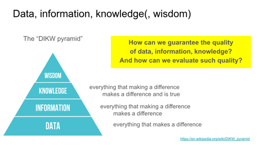

Sezione 7 — Tipi di dati, codifica e metodi
Domanda guida: che cosa stiamo davvero usando quando diciamo di “usare i dati”?
- Differenza tra dati, informazione e conoscenza.
- Produzione massiva di dati e inflazione dei dati.
- Qualità dei dati e interpretabilità.
- Tipi di dati e codifica.
- Relazione tra dati e metodi di analisi.
Per rispondere alla domanda che cos’è la conoscenza scientifica, è necessario chiarire preliminarmente che cosa si intenda per dato e per informazione. Viviamo in un’epoca caratterizzata da una produzione massiva di dati: sensori, piattaforme digitali, sistemi informativi e pratiche organizzative generano continuamente grandi quantità di dati.
Come osservato da Eric Schmidt, in pochi giorni produciamo oggi una quantità di dati paragonabile a quella complessivamente prodotta fino ai primi anni Duemila, e questo trend è destinato ad aumentare. I dati sono diventati una risorsa centrale per il funzionamento delle organizzazioni, tanto da essere spesso definiti “il nuovo petrolio”.

Tuttavia, disporre di una grande quantità di dati non implica automaticamente disporre di più informazione o di maggiore conoscenza. Non a caso si parla anche di inflazione dei dati. L’analogia con il denaro è utile: una valuta è soggetta a inflazione quando una maggiore quantità di moneta consente di acquistare meno beni. In modo analogo, all’aumentare della quantità di dati raccolti, una parte crescente di essi può risultare ridondante, rumorosa o di bassa qualità.
Che cos’è un dato
Nel senso più generale, un dato è una scelta tra alternative possibili. Di per sé, un dato non possiede significato intrinseco: rappresenta semplicemente l’esito di una selezione.
Per chiarire questo punto, immaginiamo di dover scrivere una singola lettera. L’insieme delle possibilità è costituito da tutte le lettere dell’alfabeto. Quando scrivo la lettera “A”, ho prodotto un dato: ho scelto A invece di B, C o qualsiasi altra lettera.
Quando il dato diventa informazione
L’informazione nasce quando a un dato viene attribuito un significato all’interno di un contesto condiviso. Se scrivo “la risposta corretta è A” oppure “il voto dell’esame è A”, la stessa lettera assume un significato preciso grazie a regole e convenzioni interpretative.
In questo passaggio il dato diventa informazione. I dati possono essere raccolti e trattati in grandi quantità, ma l’informazione dipende dalla possibilità di interpretare quei dati in modo coerente. Avere più dati non garantisce automaticamente di ottenere più informazione.
Qualità dei dati e data cleaning
La sequenza:
2 + ° = 4è un insieme di simboli, quindi un dato, ma non è sintatticamente corretto. Di conseguenza, non può essere interpretato in modo univoco e non produce informazione. Per questo motivo, è necessario svolgere attività di data cleaning, ovvero di pre-trattamento dei dati, per migliorarne la qualità.
Dall’informazione alla conoscenza
La conoscenza riguarda il rapporto tra un’informazione e la sua verità o attendibilità. Le nozioni di vero e falso entrano in gioco solo quando un dato è stato interpretato, cioè quando è diventato informazione.
In una prospettiva filosofica, la conoscenza può essere intesa come informazione che è anche vera. In una prospettiva epistemologica, è più corretto considerarla come un’ipotesi di verità, sempre suscettibile di revisione. In una prospettiva ingegneristica e pragmatica, infine, la conoscenza è informazione utile.
Tipi di dati, codifica e metodi
Le distinzioni tra dato, informazione e conoscenza hanno conseguenze operative dirette sulle scelte metodologiche. Il tipo di dati disponibili, il modo in cui vengono codificati e la loro qualità influenzano in modo decisivo i metodi di analisi che possono essere utilizzati e il tipo di risultati che è possibile ottenere.
Comprendere che cosa stiamo usando quando usiamo i dati consente di evitare interpretazioni fuorvianti e di rendere più consapevoli le scelte metodologiche nella ricerca scientifica.